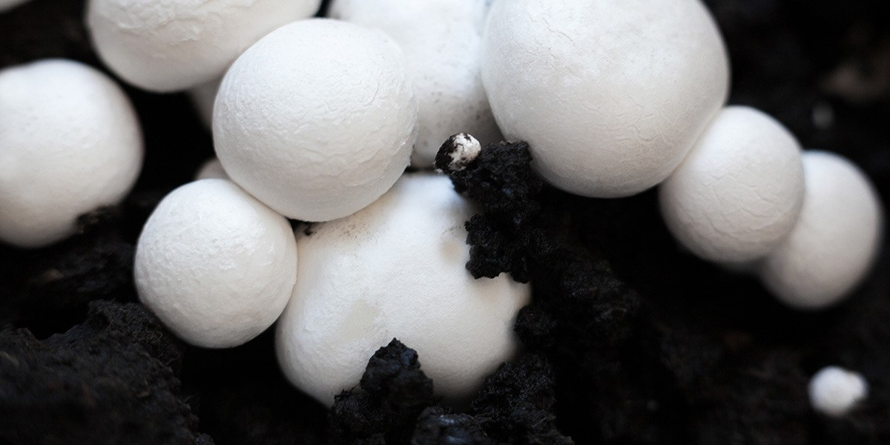

Button Facts!
Button Facts!
 Also called Baby Mushrooms or even White Mushrooms! They are the most common mushrooms you can purchase and eat. They are commonly found on Pizzas and in spaghetti sauces.